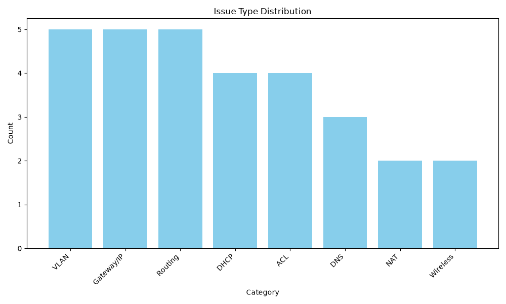
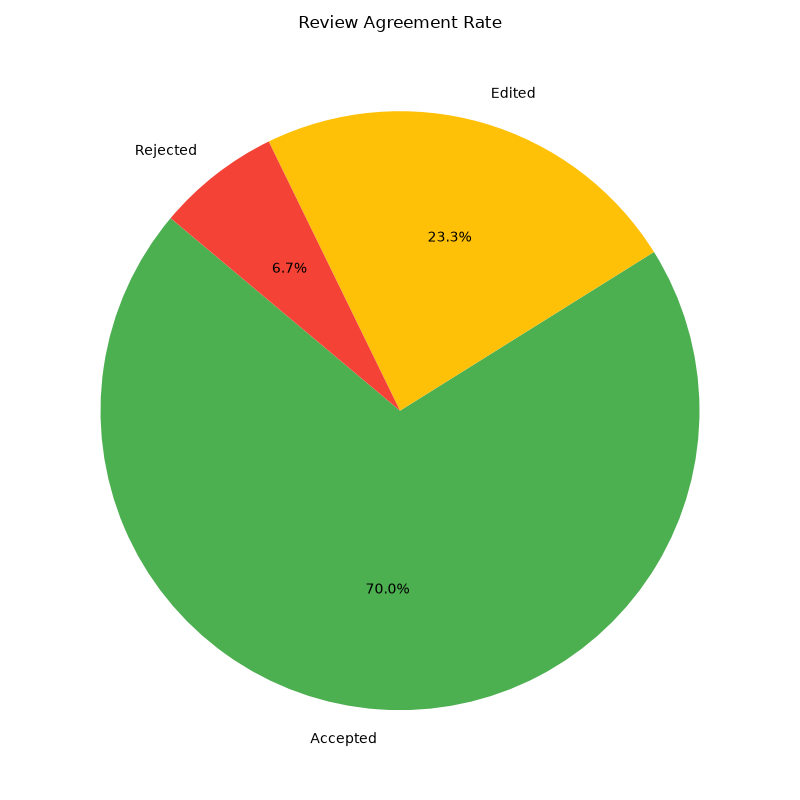

Project Overview
Real metrics from dashboard/dashboard_data.json — generated by
scripts/build_dashboard.py. All values derived from source data. None hardcoded.


Case Explorer
Select a case to inspect its network evidence, deterministic rule findings, Gemini AI diagnosis, and human review decision.
Select a Case
Choose a case from the list to view its evidence, rule findings, AI diagnosis, and human review.
Tip: Click Open C-001 in the sidebar for a quick demo.
Human Review
Every AI diagnosis was reviewed by a human expert before being accepted.
Decisions are recorded in data/review_log.csv.
Click a row to inspect the full case in the Case Explorer.
| Case ID | Category | Decision | Corrected Fields | Reviewer |
|---|
Responsible AI
Cases where the AI diagnosis required human correction (Edited or Rejected).
Demonstrates that NetSage does not blindly trust AI output —
every diagnosis is reviewed before being acted upon.
Source: data/review_log.csv.
| Case | Category | Decision | AI Root Cause (original) | Corrected Fields | Reviewer Reason |
|---|
NetSage Troubleshooting Workflow
How a Cisco Packet Tracer lab problem flows through the NetSage AI pipeline and back to the engineer for verification. Steps 1 and 8 occur in the external Packet Tracer environment.
| Step | Component | Implemented In | Output |
|---|---|---|---|
| Dataset | 30 labelled fault scenarios | data/cases.csv |
CSV rows read by pipeline |
| Rule Checking | 6 deterministic regex functions | scripts/rule_checker.py |
list[Finding] |
| Prompt Building | Template + 4 placeholder substitutions | scripts/diagnose.py :: build_prompt() |
Assembled prompt string |
| AI Diagnosis | Google Gemini — gemini-3.5-flash-lite | scripts/diagnose.py :: call_llm() |
Raw JSON string |
| Validation | 6-field JSON schema (jsonschema) | scripts/validate_diagnosis.py :: validate() |
Parsed dict or error |
| Retry / Fallback | One retry; needs_manual_review on 2nd fail | scripts/diagnose.py :: run_case() |
Diagnosis record |
| Orchestration | Full 30-case run with failure isolation | scripts/run_pipeline.py :: main() |
diagnoses.json |
| Human Review | Accept / Edit / Reject decision + reason | data/review_log.csv (manual) |
CSV review records |
| Dashboard | Metrics + charts | scripts/build_dashboard.py |
JSON + 2 PNG files |
🤖 Live AI Diagnosis
Load an existing case or enter a custom network problem. Complete the full troubleshooting lifecycle using the local backend adapter to securely access the tested NetSage Python pipeline.
🕰️ Troubleshooting History
Complete audit trail of all ad-hoc live troubleshooting sessions, kept completely separate from the verified historical dataset metrics.
| Session ID | Date | Symptom Summary | Diagnosis Status | Review Decision | Verification | Action |
|---|